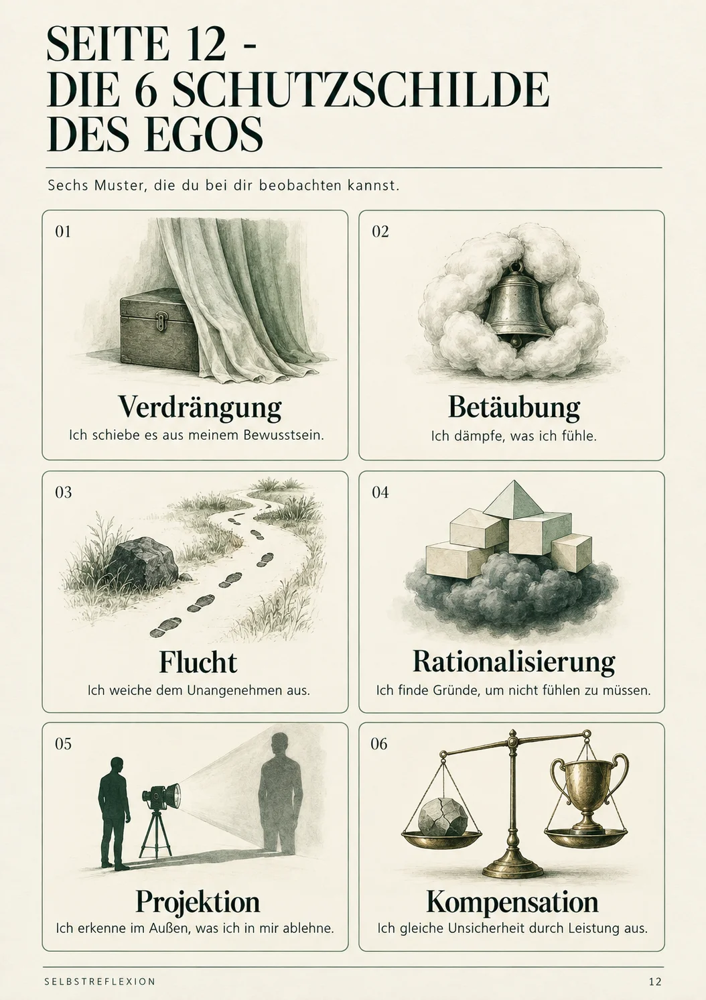
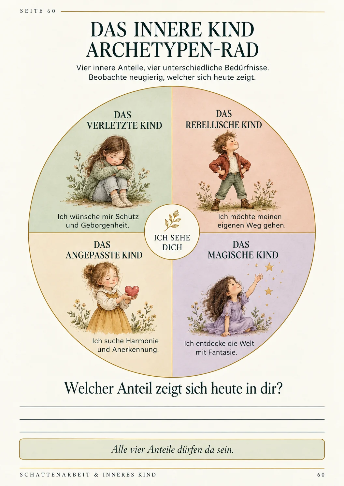
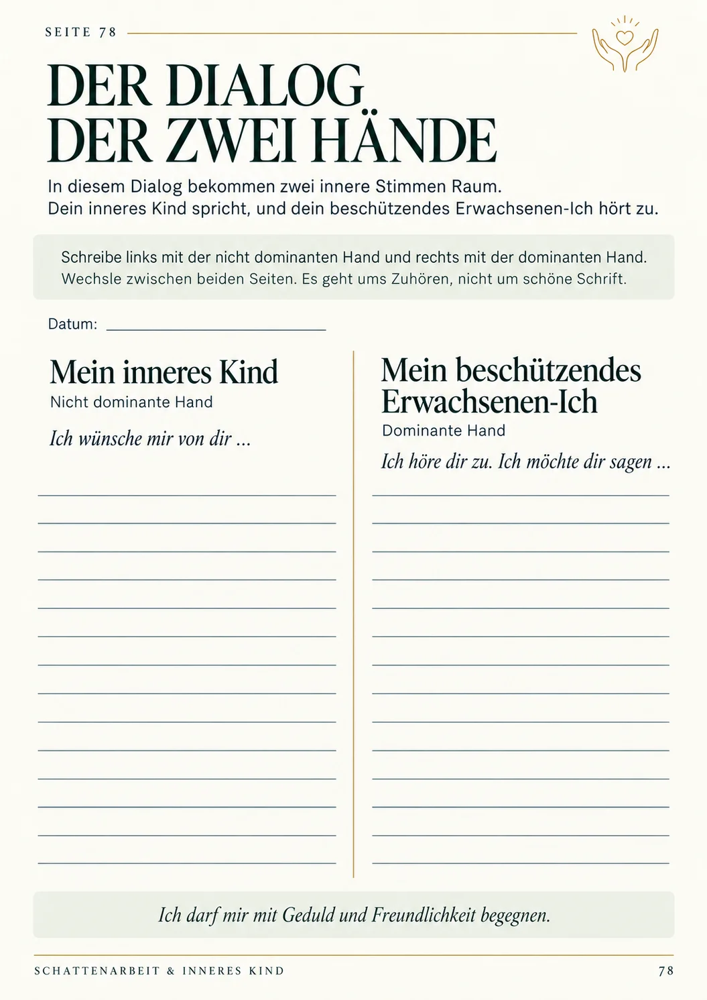
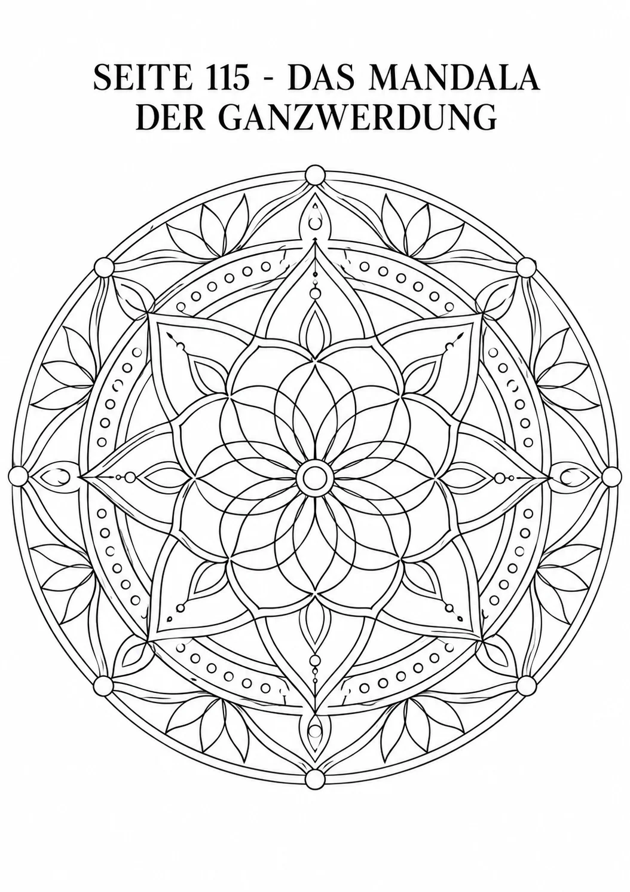
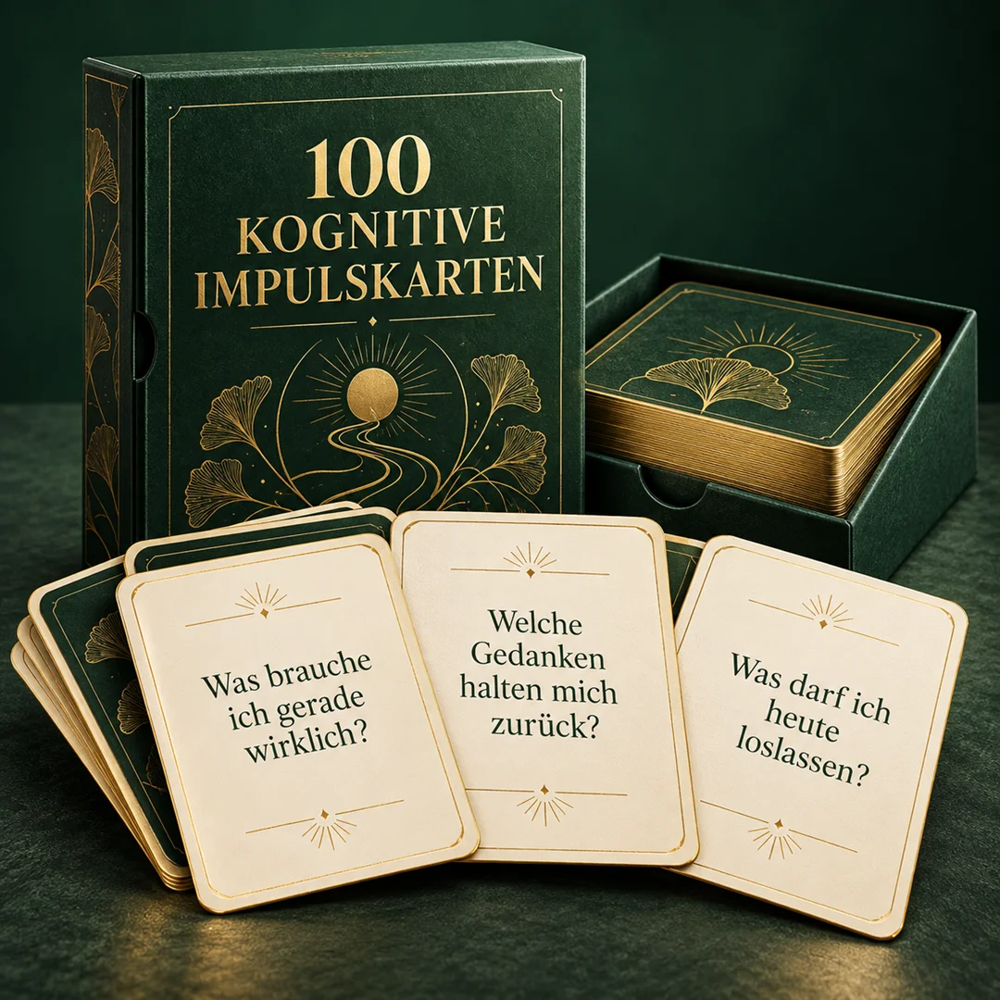

Das strukturierte 130-Seiten Arbeitsbuch im deutschsprachigen Raum: Verwandle Schattenarbeit und die Heilung deines Inneren Kindes in eine sichere, somatische und sofort anwendbare tägliche Praxis.
🔒 256-Bit SSL-Verschlüsselung • ⚡ Sofortiger Download • 🛡️ 7-Tage-Zufriedenheitsgarantie
Erkennst du dich in diesen wiederkehrenden Situationen wieder?
Die meisten Menschen glauben, sie hätten ein Disziplin- oder Motivationsproblem. In Wahrheit steuern ungelöste Schatten und verletzte Anteile des Inneren Kindes ihr Verhalten.
Du kannst schwer "Nein" sagen, passt dich ständig den Erwartungen anderer an und fühlst dich innerlich erschöpft und ausgenutzt.
Ein bestimmter Tonfall, Kritik oder Zurückweisung lösen sofort intensive emotionale Reaktionen aus, die du rational kaum kontrollieren kannst.
Immer wenn du kurz davor stehst, ein wichtiges Ziel zu erreichen oder eine erfüllende Beziehung zu leben, machst du unbewusst alles wieder zunichte.
Egal was du erreichst: Eine leise Stimme flüstert dir ständig zu, dass du nicht klug, schlank, erfolgreich oder liebenswert genug bist.
„Bis du das Unbewusste bewusst machst, wird es dein Leben steuern und du wirst es Schicksal nennen.“
— Carl Gustav Jung, Begründer der Analytischen PsychologieEs ist kein trockenes Theoriebuch, das du nach zwei Kapiteln ins Regal stellst. Es ist ein präzise strukturiertes Arbeitsinstrument, das dich Schritt für Schritt anleitet, deine verdrängten Anteile ohne Angst zu erforschen und zu integrieren.
Keine leeren Seiten ohne Idee. Jede Seite enthält fundierte psychologische Reflexionsfragen, Checklisten, Archetypen-Karten und somatische Übungen.
Schattenarbeit ohne Körperarbeit überfordert oft. Unsere Methoden integrieren Nervensystem-Regulation, damit du dich während des gesamten Prozesses geerdet und sicher fühlst.
Nutze es interaktiv auf deinem iPad/Tablet mit GoodNotes, Notability oder als beschreibbare PDF am Laptop — oder drucke es im klassischen A4-Format aus.
Jede Seite wurde mit größter psychologischer Sorgfalt gestaltet — 6 völlig unterschiedliche Module für tiefgreifende Selbstwirksamkeit:




Die 4 Archetypen von C.G. Jung, der Schatten-Kompass, dein persönliches Abwehrmechanismen-Profil und die 3 goldenen Sicherheitsregeln zur Nervensystem-Erdung vor Beginn.
Der Projektions-Spiegel (Was dich an anderen stört, zeigt deinen Schatten), der 21-Tage Trigger-Tracker, Somatisches Body-Mapping sowie die Entschlüsselung von verdrängter Wut, Scham und Neid.
Das Innere Kind Archetypen-Rad, die 5 Kindheitswunden (Ablehnung, Verlassenwerden, Demütigung, Verrat, Ungerechtigkeit), das Verlassensangst-Protokoll und die Maske des People-Pleasers ablegen.
Der bahnbrechende Dialog der Zwei Hände (Dominante Hand = Erwachsener, Nicht-dominante Hand = Inneres Kind), gesunde Grenzziehung ohne Reue, das Mandala der Selbstannahme und das Entdecken des Goldenen Schattens.
Der Innere Kritiker wird zum weisen Mentor, das Vergebungs-Ritual für Eltern & frühere Bezugspersonen, dein nachhaltiger 90-Tage Integrationsplan und das feierliche Zertifikat deiner Ganzwerdung.
Verifizierte Käufe über Hotmart aus Deutschland, Österreich & der Schweiz
„Ich habe jahrelang Podcasts gehört und Bücher gelesen, aber nie gewusst, wo ich anfangen soll. Die Übung mit dem 'Dialog der Zwei Hände' auf Seite 78 hat mich zu Tränen gerührt. Ich verstehe meine Wutanfälle endlich.“
„Unglaublich wertvoll auf dem iPad mit GoodNotes! Jedes Mal wenn mich jemand triggert, nutze ich den Trigger-Kompass. Ich reagiere nicht mehr impulsiv, sondern bleibe ruhig. 19,90 € sind lächerlich günstig dafür.“
„Das People-Pleasing Kapitel hat mir die Augen geöffnet. Ich habe zum ersten Mal ohne Schuldgefühle 'Nein' zu meiner Familie gesagt. Die somatischen Übungen geben sofortige körperliche Entspannung.“
Wenn du heute bestellst, erhältst du das 130-Seiten Arbeitsbuch plus alle 4 Sonder-Boni im Gesamtwert von 97,00 € komplett kostenfrei dazu.
Erweitere deine Selbstheilungspraxis direkt an der Kasse um spezialisierte Vertiefungswerkzeuge:

Wir möchten, dass du diese Entscheidung mit völligem Seelenfrieden triffst. Lade dir das Arbeitsbuch herunter und teste die ersten Übungen 7 Tage lang in Ruhe. Wenn du nicht spürst, dass dir dieses Buch mehr Klarheit und innere Ruhe schenkt, sende uns innerhalb von 7 Tagen eine kurze E-Mail und du erhältst 100% deines Kaufpreises zurückerstattet. Ohne Wenn und Aber.
Du erhältst sofort nach dem Kauf einen Download-Link mit einer hochauflösenden PDF-Datei. Diese ist vollständig optimiert für Tablet-Apps wie GoodNotes, Notability, Samsung Notes sowie direkt auf dem PC ausfüllbar oder im A4-Format ausdruckbar.
Ja, absolut. Wir setzen keinerlei Vorwissen in Psychologie voraus. Alle Konzepte von C.G. Jung und der Inneren-Kind-Arbeit werden in einfacher, verständlicher deutscher Sprache erklärt und mit alltagsnahen Beispielen begleitet.
Nein. Dieses Arbeitsbuch dient der tiefenpsychologischen Selbstreflexion, Persönlichkeitsentwicklung und emotionalen Selbstführung gesunder Erwachsener. Es ist kein Ersatz für eine klinische Diagnose oder medizinisch-therapeutische Behandlung.
Über unseren sicheren Partner Hotmart kannst du in Deutschland, Österreich und der Schweiz bequem mit Klarna Rechnung (erst erhalten, später bezahlen) oder Klarna Sofortüberweisung sowie PayPal und Kreditkarte bezahlen.
Ganz unkompliziert: Wenn du innerhalb von 7 Tagen ab Kaufdatum feststellst, dass das Buch nicht deinen Erwartungen entspricht, sende einfach eine E-Mail an unseren Kundensupport und du erhältst unverzüglich dein Geld zurück.